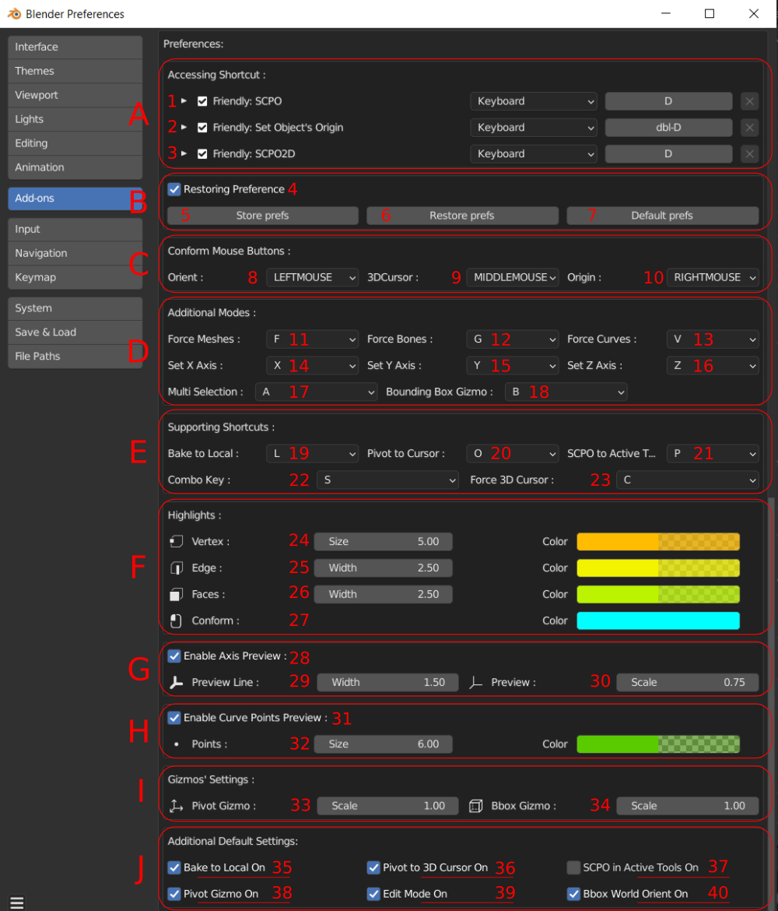

Addon's Preferences
WIP
Preference window helps to adjust FP addon:

In 'A' block you can setup invoke keys:
1. for SCPO addon operator
2. and for Center origin operator
In 'B" block:
3. Activate preferences restoring
4. Store current settings to disk
5. Restore settings from disk
6. Set all settings default
'C' block is for adjusting main comform buttons:
7. Set conform button for Pivot orientation
8. Set conform button for 3D Cursor
9. Set conform button for Origin
'D' block is for setting up addifional modes' shortcuts:
10. Set key for Bounding Box Gizmo
11. Set key for Multiselection submode(Origin and 3D Cursor)
'E' block contains supporting shortcuts settings:
12. Set key for 'X' One axis submode
13. Set key for 'Y' One axis submode
14. Set key for 'Z' One axis submode
15. Set key for 'set Origin and Orientation together' command
16. Set key for 'set 3D Cursor'(Suits for mouse without MMB)
17. Set key for 'Force raycast mode'(WARNING! mode works with errors now)
18. Set key for 'switching ON/OFF moving Pivot to 3D Cursor'
19. Set key for 'switching ON/OFF SCPO into Active Transform Tools settings
'F' block adjust color and size of addon's highlights:
20. Adjust size and color of vertex component
21. Adjust width and color of edge component
22. Adjust width and color of face component
23. Adjust conform color
'G' block setup size of components'axis preview:
24. Activate axis preview
25. Set every axis' width
26. Set preview width
'H' block adjust scale of addon's gizmos:
27. Setup Pivot Gizmo scale
28. Setup BBox Gizmo dots' scale
'J' block stores default settings:
29. Switch default ON/OFF for moving Pivot to 3D Cursor when conform the last one
30. Switch default ON/OFF for SCPO into Active Transform Tools settings
31. Switch default ON/OFF for BBox world orientation(When OFF only Local exists)
32. Switch default ON/OFF Pivot Gizmo
33. Switch default ON/OFF remain 'Edit Mode' when addon's invoked